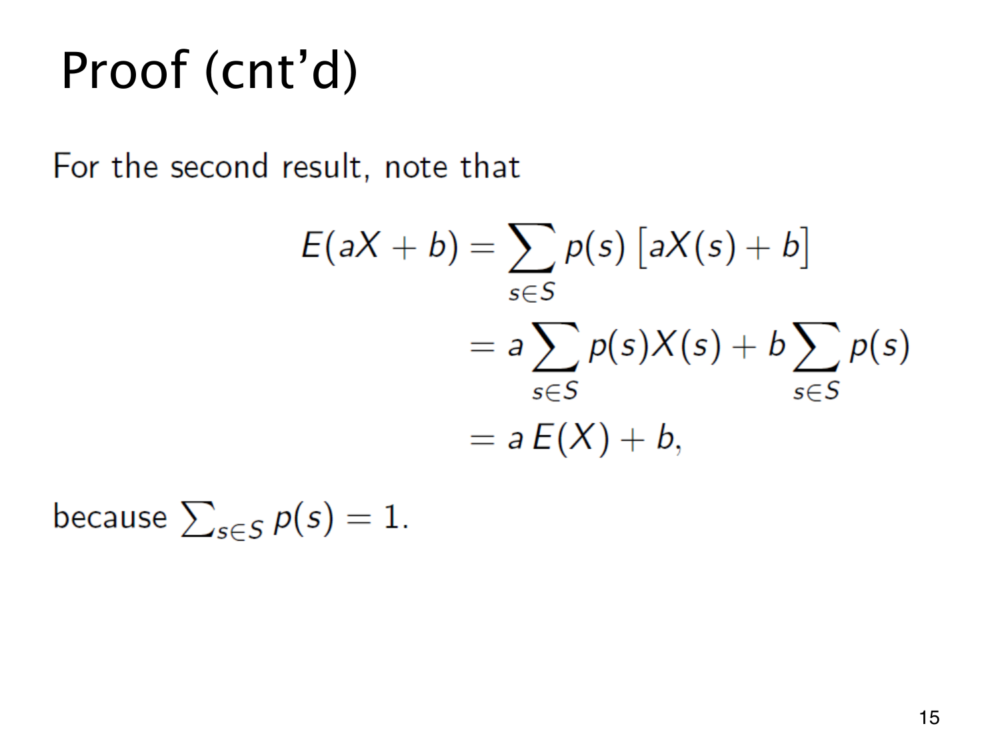

L1.11 · 第 15 页讲解原文
查看这一页课件

平移、缩放与期望
把 aX+b 在每个结果上的值代入定义，得到
E(aX+b)=s∈S∑p(s)[aX(s)+b]=as∈S∑p(s)X(s)+bs∈S∑p(s)=aE(X)+b.
中间使用分配律提出固定常数，最后用到 ∑sp(s)=1。常数偏移给每个结果都加 b，平均值也就加 b；a 为负也成立，例如 E(−X)=−E(X)。
公平骰子点数的期望为 3.5。若按 Y=2X+5 计分，直接有 E(Y)=2(3.5)+5=12，无须重列六种得分的概率表。
能提出的是固定常数，不能把另一个随机变量当常数。平方也不属于这种变换，E(X2) 通常不等于 E(X)2。